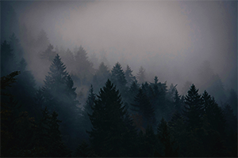
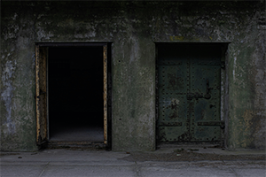

En mörk och fängslande resa: Recension av "Bunkern"
I NORCOPIA PICTURES senaste skapelse "Bunkern" förflyttas vi till en verklighet som känns avlägsen men samtidigt olycksbådande nära. Filmen bjuder in oss till en suggestiv berättelse som utforskar konsekvenserna av en samhällsomvälvande händelse och tar oss med på en resa genom tid och landskap. 
Handling
Handlingen tar sin början i en mörk och fuktig bunker där tre vänner, huvudkaraktären Vidar, hans bästa vän Bea och lillebror Victor, finner sig instängda. Det som följer är en gripande resa genom ett förändrat landskap där vänskap, kärlek och överlevnad står i fokus. Filmen tar oss med till platser i Östergötland som vi tyckte oss känna väl, men som nu ter sig helt främmande och ödsliga.
Analys
Genom Vidars ögon får vi uppleva händelsernas förlopp på ett intimt sätt. Regissörens skickliga användning av kameravinklar och bildkomposition låter oss följa huvudkaraktärens inre resa som en fluga på väggen. Detta skapar en stark koppling mellan tittaren och huvudkaraktären och väcker starka känslor och tankar hos oss som publik.

"Bunkern" är mer än bara en spännande berättelse. Den lyfter även upp viktiga samhällsproblem och väcker tankar kring vår egen tids problem och utmaningar. Relationen mellan Vidar, Bea och Victor speglar på ett trovärdigt sätt den komplexa dynamiken mellan syskon och vänner, och ger en intressant dimension till berättelsen.
Trots att filmen kan uppfattas som överdriven ur vissa perspektiv, känns den ändå otäckt relevant i ljuset av världens nuvarande tillstånd. "Bunkern" presenterar oss för ett Sverige vi inte känner igen och lämnar oss med starka intryck och tankar om vår egen tid.
Slutsatsen är klar: "Bunkern" är en film som inte bara underhåller utan även väcker tankar och diskussioner kring aktuella samhällsproblem. För den som är intresserad av en resa till ett alternativt samhälle präglat av våra egna tidsproblem är detta en film som inte får missas.
Betyg:
Det betyg som filmen får är fem av fem stjärnor.